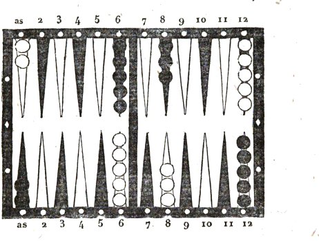

Traité du jeu de Backgammon
AVANT-PROPOS
Tout porte à croire que le jeu du Backgammon doit aux Anglais son origine et son invention, dont nous ignorons l'époque. Il a été longtemps presque inconnu en France, et ce n'est que vers la moitié du siècle dernier que l'on a vu quelques amateurs français s'y exercer dans nos sociétés; ils en trouvaient, il est vrai, rarement l'occasion, parce qu'en général on préférait et avec raison le Trictrac, qu'on était déjà parvenu à jouer avec beaucoup de perfection. Mais les événements qui se sont succédé depuis un petit nombre d'années, les circonstances majeures qui ont terminé des guerres presque continuelles par une alliance politique qui semble promettre une paix durable, ont fait affluer les Anglais sur notre continent. Les uns y sont attirés par des relations commerciales, les autres (et c'est le plus grand nombre) par l'empressement de venir jouir des beautés de notre climat, et surtout pour satisfaire leur goût éclairé pour les arts, en visitant notre capitale, où se trouvent réunis une si immense quantité de chefs-d'œuvre dans tous les genres, dont nos voisins savent si bien juger et apprécier le mérite. De cette affluence et des motifs qui la produisent il est résulté que nous avons adopté, ainsi que le caractère français y est naturellement porté, une partie de leurs goûts et de leurs usages; et le Backgammon, participant à la faveur de cette adoption, s'est insensiblement introduit parmi nos jeux de société, où il a été admis, soit parce que la simplicité de ses calculs et le nombre limité de ses combinaisons exigent pour l'apprendre moins d'étude et de travail, soit parce que notre goût nous porte naturellement vers les nouveautés, et surtout vers celles qui nous viennent de l'étranger. Quoi qu'il en soit, nous avons cru dans cet état de choses, satisfaire les amateurs du Trictrac et ceux du Backgammon, en joignant à notre traité du premier un traité complet du second. Cette réunion ne peut qu'être utile et agréable à ceux qui connaissent l'un et l'autre jeu. A l'égard de ceux qui ne connaissent que l'un des deux, elle pourra leur inspirer le désir d'apprendre l'autre, avec d'autant plus de raison qu'il existe entre ces deux jeux d'assez nombreux rapports, et des points de rapprochement, tant dans la partie des règles que dans l'application de plusieurs calculs.
Quoique le Trictrac, par l'étendue de ses calculs, la variété de ses combinaisons et la diversité de ses vicissitudes, ait une supériorité incontestable sur le Backgammon, on ne peut cependant disconvenir que ce dernier offre un intérêt plus attachant, exige plus de justesse et de sagacité dans ses spéculations, que la plupart des jeux qui font aujourd'hui l'amusement de nos sociétés; et si quelque considération peut nuire à la préférence qui lui serait due, c'est qu'il ne peut occuper et amuser que deux joueurs, et qu'il n'est pas susceptible, par sa nature, d'en admettre un plus grand nombre.
Le traité du jeu de Backgammon le plus généralement connu en Angleterre est celui publié sous le nom de Hoyle; il se trouve dans un recueil de traités sur différents autres jeux, tel que celui connu en France sous le titre d'Académie des jeux. Ce traité sur le Backgammon est très superficiel, tant pour les préceptes que pour les règles; il n'en présente que cinq, et laisse par conséquent beaucoup à désirer à cet égard. De ce petit nombre de règles deux paraissent se contredire, et deux autres ne sont qu'ébauchées; nous les avons terminées en y joignant nos observations.
La partie des calculs est incomplète, et n'offre pas les développements convenables pour qu'on puisse les appliquer utilement aux différentes positions. Ces considérations font d'autant mieux sentir les avantages que trouveront les amateurs dans la réunion de ce traité du Backgammon avec celui du Trictrac; car dans ce dernier tout est prévu, tant pour l'exposition et l'application des calculs que pour les règles, dont un grand nombre sont communes à l'un et à l'autre jeu. En consultant le traité du Trictrac pour tous les cas non prévus, mais analogues au Backgammon, on suppléera au vide que présente l'ouvrage anglais.
CHAPITRE PREMIER.
Notions préliminaires.
LE Backgammon se joue dans le même tablier que le Trictrac, il se joue pareillement avec deux dés: chaque joueur a, comme au Trictrac, quinze dames; les unes sont blanches, les autres sont noires ou vertes. Les jetons n'y sont d'aucun usage parce qu'il n'y a pas lieu à marquer des points, ni par conséquent lieu à école. On a des fichets pour marquer les parties que l'on gagne.
Pour rendre plus facile l'intelligence de nos instructions, nous plaçons ici un plan figuré du tablier et de la position respective qué les dames de chaque joueur doivent occuper dans ce tablier au commencement de la partie, position bien différente de celle qui a lieu au commencement de chaque relevé du Trictrac, où chacun des joueurs les met en pile sur la première flèche de son petit jan.
En désignant par des numéros de 1 à 12 le nombre des flèches de chacun des côtés du tablier, nous avons pensé que cette mesure rendrait plus faciles à comprendre les explications et développements que nous donnerons.

Dans la figure ci-dessus le joueur aux dames noires occupe la partie supérieure du tablier, et l'autre la partie inférieure. Le premier a sa table de sortie à sa droite, le second a la sienne à sa gauche. Ces tablesde sortie sont généralement désignées par la dénomination de plein, soit que les six cases soient faites, soit qu'elles ne le soient pas, parce que c'est la table dans laquelle toutes les dames doivent entrer pour sortir par la bande. Nous emploierons indifféremment l'un ou l'autre de ces termes. Celui qui a les dames noires les place sur différentes flèches, de la manière suivante : deux à la flèche de l'as de son adversaire, cinq à la douzième flèche de la deuxième table de l'adversaire, trois sur sa hui tième flèche, et cinq sur sa sixième flèche, dans sa table de sortie. Celui qui a les dames blanches, les place sur les flèches opposées à celles occupées par l'adversaire et en même nombre.
Le joueur qui a son plein ou sa table de sortie à sa droite, doit diriger la marche de ses dames de droite à gauche pour les amener à cette table; l'autre au contraire les dirige de gauche à droite.
La position respective des dames indiquée dans la figure peut être changée par les joueurs, qui ont la faculté d'établir une position contraire ; en sorte que celui qui, dans la figure, a sa table de sortie à sa droite, peut l'établir à sa gauche, et l'adversaire la mettre à sa droite au lieu de l'avoir à sa gauche. Dans ce cas les numéros désignés pour chaque flèche dans la figure subiraient le même changement pour l'intelligence des démonstrations, en sorte que la flèche douzième deviendrait celle de l'as, et celle de l'as deviendrait la douzième. Les autres flèches intermédiaires seraient numérotées dans le même sens et dans le même ordre; de manière que ce qui dans les démonstrations est indiqué comme la gauche deviendrait la droite, et réciproquement.
De ces différentes positions il résulte que les dames de chacun des joueurs ont des espaces inégaux à parcourir; deux de ces dames seulement, celles sur les flèches de l'as, doivent parcourir la totalité du tablier. Chaque joueur a quatre piles de première position; et dès le premier coup de dés, de même que pour les suivants, il peut jouer avec des dames enlevées de celle des piles qu'il juge à propos.
La partie n'est point, comme au Trictrac, composée de plusieurs relevés plus ou moins nombreux, un seul la termine. Le but unique de cette partie consiste à ce que chaque joueur, après avoir fait parcourir à ses dames les espaces qui les séparent de la table de sortie, parvienne à les réunir toutes dans cette même table, pour, après cette réunion, les sortir et les enlever hors du tablier, à mesure que les points amenés le permettent, en se conformant à cet égard aux lois prescrites au Trictrac pour la sortie des dames au jan de retour. On peut consulter ces lois dans notre traité sur le Trictrac, chap. VII.
Quoique les règles pour la sortie des dames soient, comme nous venons de l'exposer, les mêmes qu'au Trictraç, cependant la méthode et la conduite à suivre ne sont pas les mêmes. Au Backgammon elle exige des mesures de précaution et de prévoyance qu'elle n'exige pas au Trictrac. A ce dernier nul danger à craindre pour cette sortie, la prudence y est absolument nulle; la nature des points amenés en détermine seule le succès ou l'écueil. Au Backgammon, au contraire, il se présente des dangers dont il faut chercher à se garantir. Une imprévoyance peut causer la perte d'une partie dont le gain autrement aurait été infaillible. Cer taines positions exigent une prudence qui ne permet pas de sortir toutes les dames que l'on aurait droit de sortir, c'est ce que nous développerons dans les instructions sur la conduite du jeu.
Calculs du Trictrac appliqués au Backgammon, avec la différence occasionnée par les doublets. Les calculs qui dérivent de l'analyse des dés, dont nous avons donné la démonstration et le tableau dans le chapitre second de notre traité du Trictrac, sont applicables au Backgammon pour connaître les probabilités qu'offrent, dans les diverses positions, les différentes manières de jouer. Nous pensons qu'il est utile et même nécessaire aux amateurs du Backgammon, de bien connaître les calculs, afin d'en pouvoir faire une juste application, surtout dans les coups où leur utilité est d'une plus grave importance.
Nous devons cependant faire observer que la règle du Backgammon exigeant que chaque doublet se joue double, c'est-à-dire qu'au lieu de jouer deux fois le nombre élémentaire de chaque doublet, ce nombre élémentaire soit joué quatre fois; ainsi pour un sonnez on joue vingt-quatre points au lieu de douze, pour un béset quatre points au lieu de deux, etc., il en résulte nécessairement une différence dans le nombre des chances que donne chaque point combiné. Par exemple, le nombre 3, qui au Trictrac ne peut être atteint que par treize chances, le peut être par quatorze au Backgammon, parce que le béset, se jouant double, parvient aussi au nombre 3. Le nombre 4 peut pareil lement être atteint par béset, ce qui lui donne quinze chances au lieu de quatorze. Il en est de même du nombre direct 6 qui au lieu de seize chances, en donne dix-sept, parce que pour le double deux on joue quatre deux, et que par le troisième deux on arrive au nombre 6.
Les nombres 8, 9, présentent également dans la combinaison des chances la même différence d'une chance de plus; car, outre les cinq chances pour arriver à 8 par les deux nombres réunis, ou en jouant tout d'une, on a encore le double deux qui, joué double, parvient au nombre 8. Outre les quatre chances qu'offre le point de 9, on a de plus le terne par lequel on arrive à 9. Et enfin pour le point de 12, au lieu d'une chance unique on en a trois; savoir, le sonnez, le carme et le terne.
Nous réunissons dans le tableau suivant les nombres pour lesquels cette différence existe.
Le nombre 3 a 14 chances au lieu de 13. Le nombre 4 a 15 chances au lieu de 14. Le nombre 6 a 17 chances au lieu de 16. Le nombre 8 a 6 chances au lieu de 5. Le nombre 9 a 5 chances au lieu de 4. Le nombre 12 a 3 chances au lieu de 1.
A l'aide de ces calculs un joueur peut connaître promptement et facilement combien il a de chances, soit pour battre une des dames de l'adversaire, soit pour rentrer les dames qu'il se trouve avoir en main, en faisant néanmoins déduction des obstacles qu'opposent les cases de l'adversaire, lorsqu'il s'en rencontre d'intermédiaires entre la flèche sur laquelle doit s'opérer sa rentrée et celles qui la précèdent. Ainsi, par exemple, s'il n'a pour rentrer sa dame que la quatrième flèche, il n'a que onze chances pour cette rentrée; il en aurait vingt, si la deuxième flèche se trouvait pareillement vide ou en demi-case, parce que, pouvant encore rentrer par le deux, cette faculté accroît de neuf chances le nombre de celles qui sont favorables à cette rentrée. Si les quatre premières flèches étaient vides ou en demi-case, le joueur aurait trente-deux chances pour rentrer la dame qu'il a en main, savoir : onze pour l'as, neuf pour la deuxième flèche, sept pour la troisième et cinq pour la quatrième, suivant la progression décroissante dont nous avons donné la démonstration dans notre traité du Trictrac, au chapitre II de l'analyse des dés, que nous invitons les joueurs de Backgammon à consulter. Nous les invitons aussi à consulter la méthode que nous indiquons dans ce traité pour connaître, par un prompt aperçu, le nombre des chances qu'offrent les différentes positions pour faire une case que certaines circonstances rendent importante. Mais, en faisant usage de cette méthode, ils ne doivent pas perdre de vue la différence qui, dans certains cas, peut résulter de la survenance des doublets, dont chaque point élémentaire se joue quatre fois. Cette méthode fait partie de celles que nous avons indiquées au chapitre II du traité de Trictrac.
Enfin nous pensons que la connaissance et l'étude de tous les différents calculs qu'offre ce traité ne peuvent qu'être très utiles au Backgammon pour toutes les positions auxquelles ils sont applicables.
CHAPITRE II. Règles.
Règles du Tictrac applicables au Backgammon. Les règles du Trictrac, concernant les dés, les dames et leur sortie, sont applicables au Backgammon, sauf les exceptions que nous indiquerons. Les doublets conservent la même dénomination qu'au Trictrac; il n'y a à leur égard d'autre différence, qu'en ce qu'au Backgammon on joue le double des points que présente ce doublet. En conséquence, pour un terne on joue douze points, vingt-quatre pour un sonnez, et ainsi des autres.
Tous les incidents auxquels peut donner lieu le jet des dés, leur position après le jet, etc., sont soumis aux lois établies pour le Trictrac. Nous nous bornerons donc dans ce chapitre à exposer les règles qui sont particulières au Backgammon et étrangères au Trictrac, et celles qui, ayant rapport à l'un et à l'autre, en diffèrent néanmoins en quelques points.
On appelle chaque coup de dés au Backgammon, ainsi qu'au Trictrac, en désignant chacun des nombres qui le composent, et non la totalité du point, parce que, à l'un comme à l'autre jeu, on a l'option de jouer, ou chacun des nombres séparément et avec des dames différentes, ou les deux nombres réunis avec une seule dame.
Dames battues. Au Backgammon on ne peut jouer un des nombres de son point sur une flèche occupée par une case de son adversaire; il faut que ce nombre aboutisse ou à une flèche vide, ou à une flèche garnie seulement d'une dame en demi-case. Dans ce dernier cas la dame sur laquelle porte ce nombre est battue et chassée du tablier, soit que le joueur se fixe sur cette flèche, soit qu'il continue sa marche pour jouer avec la même dame l'autre nombre. Ainsi on peut par un même coup de dés battre, ou (ce qui est synonyme) chasser du tablier deux dames de l'adversaire; on en peut même chasser quatre, si on amène un doublet dont le point élémentaire, se jouant quatre fois, peut aboutir ou par une même dame, ou par différentes dames à autant de dames en demi-cases.
Rentrer les dames en main. La dame ou les dames chassées doivent rentrer dans le tablier par la table du plein de l'adversaire. Elles restent dans la main du joueur à qui elles appartiennent, et ce joueur ne peut, jusqu'à ce que cette rentrée soit consommée, et qu'il ne lui reste plus de dames en main, jouer les points. qui lui surviennent avec aucune de ses autres dames. Cette rentrée ne peut avoir lieu que lorsque les points amenés aboutissent directement soit à une flèche vide, soit à une flèche en demi-case du plein de l'adversaire, soit à une flèche déjà occupée par le joueur. Si le dé s'oppose à la rentrée, le joueur est privé de jouer les points qui y sont contraires.
En usant de l'expression dames en main, dames rentrées dans la main, pour désigner les dames qui ont été battues et chassées du tablier, nous n'entendons pas que ces dames doivent rester et résider réellement dans la main du joueur à qui elles appartiennent; elles doivent au contraire, à mesure qu'elles sont chassées, être placées en évidence au milieu du tablier, pour qu'on n'oublie pas de les rentrer, et plus spécialement encore, afin que l'adversaire puisse régler et diriger la conduite de son jeu, sur le nombre connu des dames qui sont à rentrer.
Primauté du dé au Trictrac. Au Trictrac, pour déterminer entre les joueurs la priorité du dé au commencement d'une partie, l'un d'eux, après avoir mis les dés dans un cornet, les lance vers la bande opposée; cette priorité appartient à celui qui se trouve avoir de son côté le dé qui présente le point le plus élevé, et il joue le coup produit par ce jet des dés. Si les points présentés par l'un et l'autre dé sont les mêmes, on recommence l'épreuve.
Primauté du dé au Backgammon. Au Backgammon l'usage adopté est différent. Chacun des joueurs met un dé dans son cornet, et le lance; celui dont le dé présente le nombre le plus élevé obtient la priorité; mais, au lieu de jouer le point que produisent les deux dés réunis, il les reprend, les lance de nouveau, et joue le coup que produit ce second jet.
C'est aux joueurs à établir par une convention particulière celle des deux méthodes qu'ils préfé reront.
Obligation de jouer une dame Au Trictrac, pour être obligé de jouer une dame, il suffit de l'avoir touchée; au Backgammon, il faut dame. l'avoir ou déplacée ou même soulevée.
Dame jouée. Pour qu'une dame soit jouée, il faut, comme au Trictrac, qu'elle soit placée et abandonnée.
Ainsi le prononce Hoyle dans la seconde règle, mais dans la cinquième il dit :
Lorsqu'un joueur s'est trompé en jouant son coup de dés, si son adversaire a tiré les dés, il n'est pas au pouvoir des joueurs de rien changer, à moins qu'ils n'en conviennent d'un commun accord.
(Décision qui est conforme aux principes.)
De cette dernière règle l'on doit conclure que si l'adversaire n'a pas jeté les dés, celui qui s'est trompé peut rectifier son erreur.
Dames mal jouées et fause case. Les renseignements que nous avons pris à ce sujet nous ont convaincu que tel est l'usage observé en Angleterre, quand le joueur s'est trompé sur une seule dame, dans ce cas il la remet sans difficulté sur la flèche où elle devait être posée. Mais, lorsqu'il y a eu deux dames mal jouées, on applique la règle de rigueur qui est observée au Trictrac. Nous ne connaissons pas la raison qui peut autoriser la tolérance de la première décision; car, si le joueur fait une erreur, elle doit être punie. Nous supposons qu'il amène un point qui n'aboutit pas à une dame en demi-case qu'il a intérêt de couvrir, mais que néanmoins il la couvre son adversaire a bien le droit de remettre à sa vraie place la dame qui a été mal jouée; mais s'il ne s'en aperçoit pas, la dame reste couverte, et le joueur profite de la faute qu'il a commise soit volontairement, soit involontairement. Il y a plus: un joueur de mauvaise foi pourrait battre une dame en demi-case, en jouant un autre point que celui amené, ce qui occasionnerait à l'adversaire un grand préjudice, s'il ne s'en apercevait pas, et peut-être même la perte de la partie. Des joueurs peu délicats se livreraient souvent à de pareilles tentatives, s'ils n'étaient pas retenus par la crainte de la peine.
Il est donc de toute justice que la dame mal jouée soit entièrement à la discrétion de l'adversaire, qui pourra lui appliquer toute la rigueur de la règle, dont une des dispositions est de lui faire jouer le coup tout d'une, si elle a outrepassé le nombre le plus fort du point amené.
D'après la citation que nous venons de faire, l'on voit que la règle cinquième est en contradiction avec la seconde, puisque la dame mal jouée a été réellement abandonnée. Les Anglais répondent à cette observation que, n'ayant pas été abandonnée sur la flèche où le point amené aboutissait, le joueur conserve le droit de l'y mettre. Pour que cette raison fût valable, il faudrait qu'elle fit dans la règle le sujet d'une exception : et d'ailleurs pourquoi ne serait-on pas aussi rigoureux pour une dame mal jouée qu'on l'est pour deux dames? Pour les dames mal posées et abandonnées, ainsi que pour les fausses cases, voyez les règles du Trictrac.
Fautes couvertes par la consommation du coup. Les fautes provenant de fausses cases ou dames mal placées sont couvertes par la consommation du coup, laquelle a lieu aussitôt que l'adversaire a jeté les dés pour le coup suivant; alors il n'est plus admis à exiger aucune réforme, à moins qu'elle ne se fasse d'un commun accord.
Privilège que l'on se crée à la sortie des dames. Au Trictrac on est obligé par les lois de la sortie des dames au jan de retour, chap. VII, de jouer la totalité de son point dans l'intérieur du tablier lorsque cela est possible. On ne peut, par la manière dont on joue l'un des nombres, se mettre dans l'impossibilité de jouer l'autre autrement que comme point excédant; mais au Backgammon les Anglais se permettent de se créer ce privilège, dont le traité de Hoyle ne fait aucune mention. Il n'est fondé que sur un usage abusif dont l'origine est inconnue, et qui nous semble exiger une réforme. Pour rendre cette vérité plus sensible, nous croyons devoir présenter les exemples suivants.
Premier exemple. Un joueur a une dame à la sixième flèche de sa table de sortie, plusieurs autres à la quatrième, et le surplus aux cases de l'as et de la deuxième flèche. Si dans cette position ce joueur amène 5 et 3, quoiqu'il pût jouer la totalité de son point dans l'intérieur du tablier, il est néanmoins admis à jouer d'abord le 3 à la troisième flèche avec la dame placée à la sixième, et sortir ensuite pour le 5 une dame de la quatrième comme point excédant.
Deuxième exemple. Un joueur lève ses dames à la fin de la partie, il a deux dames sur la flèche de l'as, autant sur la deuxième, trois sur la troisième et une sur la sixième; il amène 6 et 3 qu'il joue avec la dame de la sixième et une de la troisième flèche, il ne laisse pas de dame en demi-case, et il ne craint pas d'être battu par son adversaire qui a une dame en main.
Maintenant, en supposant les jeux dans la même position, avec la seule différence qu'au lieu d'avoir trois dames sur la troisième flèche, le joueur n'en a que deux, il amène encore 6 et 3; pour ne pas exposer une dame en demi-case, il commence à jouer son 3 avec la dame placée à la sixième flèche qu'il porte à la troisième, et avec cette même dame il joue ensuite le 6.
L'on voit que le même coup est joué de deux manières différentes, suivant l'intérêt du joueur qui, pour ne pas être exposé à avoir une dame en demi-case, au lieu d'employer neuf points en portant ses dames sur la bande, n'en emploie que six. Une pareille manière de jouer n'est pas reçue en France; elle est contraire aux principes du jeu, qui veulent que l'on joue la totalité de son point, ou tout ce qu'il est possible d'en jouer. Ainsi les joueurs observeront à cet égard les règles du Trictrac.
Pour prouver qu'un pareil privilège est contraire aux principes du jeu, et qu'il le dénature, surtout pour un arrière-jeu dont il détruit tout l'intérêt, nous allons citer l'exemple suivant.
Troisième exemple. Un joueur a levé toutes ses dames, excepté deux qui sont à sa deuxième flèche et une à sa troisième, son adversaire a une dame sur la flèche de l'as. Le joueur amène 6 et as; il commence à jouer son as avec sa dame de la troisième flèche qu'il met en surcase à la seconde, et il lève cette même dame pour jouer le 6. Par cette manière de jouer il évite de mettre en demi-case les deux flèches de l'as et du 2, ce qu'il aurait été obligé de faire s'il se fût conformé à nos règles.
Nous pensons que les amateurs éclairés adopteront une règle qui est conforme aux principes du jeu, qui est égale pour tous les joueurs, et qui ne présente pas les inconvénients de celle observée par les Anglais.
Impuissance de jouer lors de la sortie des dames. Il est un cas qui ne peut avoir lieu au Trictrac, et qui peut au contraire se présenter au Backgammon, c'est celui où l'impuissance de jouer le point amené sur la bande de sortie est causée par la présence d'une case de l'adversaire dans cette même table de sortie. L'exemple suivant fera mieux connaître cette exception.
Le joueur qui opère sa sortie a plusieurs dames sur la sixième flèche de cette table, et le surplus placé sur la flèche de l'as et sur la deuxième, et l'adversaire a une case sur la troisième; si le joueur, dans cette position, amène terne, il est empêché par la présence de cette case de porter à la bande de sortie les dames placées à la sixième flèche, parce que chacun des éléments qui composent ce point aboutit directement à la troisième flèche occupée par la case de l'adversaire. Malgré cette impuissance il ne peut jouir du bénéfice des points excédants, en jouant ce terne avec les dames placées à la deuxième flèche; parce que cette impuissance n'est pas absolue, elle est seulement relative; elle ne provient pas de la nature du dé, mais d'un obstacle qu'oppose l'adversaire. Dans ce cas, celui qui amène terne est privé de le jouer.
Jouer avec quatorze dames. Lorsqu'un des joueurs pendant le cours de la partie est reconnu n'avoir que quatorze dames, la partie se continue et s'achève dans cet état. Celui à qui appartient la dame absente ne peut la faire rentrer, mais il n'encourt aucune peine. Ainsi le prononce le traité anglais que nous avons sous les yeux, donnant pour motif le préjudice que cette absence cause infailliblement au joueur à qui la dame appartient.
Nous avons fait un examen approfondi de l'utilité ou du préjudice qui pouvait résulter pour l'un ou l'autre joueur de l'absence d'une dame; cet examen nous a convaincus qu'il peut exister des circonstances et des positions où cette absence pourrait être avantageuse au joueur à qui la dame appartient, et auquel par conséquent la faute doit être imputée. Cette observation est applicable au cas où les joueurs rentrent toutes leurs dames dans leur plein sans battre.
D'ailleurs, quand on s'apercevra de l'absence de la dame qui manque, l'on ne pourra pas toujours savoir quelle est la cause qui l'a fait disparaître; l'on peut supposer que c'était une dame en main qui n'a pas été rentrée. Un joueur de mauvaise foi pourrait user de ce moyen pour se procurer le gain de la partie; il pourrait même soustraire une dame de son jeu pour se procurer un avantage quelconque, si la règle se contentait de laisser continuer la partie avec quatorze dames, ce qui serait pour lui un avantage et non une punition; car son adversaire ne pourrait pas adopter une autre décision.
Supposons qu'un joueur de mauvaise foi ait trois dames en main, que par son premier coup de dés il en rentre deux, et qu'ensuite il amène sonnez par lequel il ne peut rentrer, ce joueur, feignant de n'avoir plus de dame en main, jouerait son sonnez avec les deux dames rentrées, avancerait son jeu, et gagnerait la partie. Il est à croire que l'origine de cette faute restera inconnue, et que fût-elle connue, la position des jeux la rend irréparable. D'après tous ces motifs il est donc de toute justice qu'on ait le droit, soit d'annuler la partie, si cela convient, soit de la laisser continuer avec quatorze dames.
Nous pensons que le plus grand nombre des amateurs anglais, reconnaissant la justice des motifs qui ont dicté notre décision, adopteront notre règle, quoiqu'elle soit contraire à leurs usages.
Dames indûment levées par celui qui a une dame en main. Lorsqu'un joueur, ayant une dame en main à la fin de la partie, lève par erreur des dames avant d'avoir rentré celle qu'il avait en main, la règle anglaise dit qu'il doit rentrer toutes ces dames indûment levées, comme celle qui est en main. Cependant il y a des positions où l'adversaire aimera mieux que le joueur n'ait qu'une dame à rentrer que d'en avoir plusieurs. En effet, si cet adversaire a toutes ses dames dans son plein dont il occupe les cases, excepté celles de l'as et du 2, et que le joueur s'établisse sur ces deux flèches, l'adversaire sera vraisemblablement obligé, en levant ses dames, d'en laisser en demi-case qui peuvent être battues, et qui l'exposent à perdre la partie. Il doit donc avoir le choix, ou de faire rentrer toutes les dames indûment levées, ou de les faire remettre à la place qu'elles occupaient, et de faire rentrer la dame en main, si les points amenés par le dernier coup de dés le permettent.
Dames indûment levées par celui qui n'a pas entré toutes ses dames dans son plein. Il en est de même lorsqu'un joueur lève indûment des dames, quoiqu'il n'ait pas encore entré dans sa table de sortie toutes celles qu'il a dans les autres parties du tablier. Dans ce cas son adversaire a l'option, ou de lui faire mettre en main ces dames indûment levées, ou de les faire remettre à la place qu'elles occupaient, et faire jouer le dernier coup de dés, en faisant rentrer la dame qui était en main, si les points amenés le permettent.
Faute de celui qui, ayant une dame en main, joue son coup sans la rentrer. Si un joueur, oubliant de rentrer une dame qu'il a en main, joue un ou plusieurs coups dans son jeu, l'adversaire a le droit de lui faire mettre en main les dames qu'il a indûment jouées, ou de les faire remettre à la place qu'elles occupaient, et de faire rentrer la dame qui était en main, si les points amenés par le dernier coup de dés le permettent.
Ces deux dernières règles sont nouvelles, elles n'ont jamais été prévues ni dans les traités ni par l'usage; elles sont conformes aux principes, et elles seront vraisemblablement accueillies et observées.
Telles sont, outre les règles communes au. Trictrac et au Backgammon, celles qui sont spécialement applicables à ce dernier jeu.
L'on a déjà vu que le traité de Hoyle ne nous a pas été d'un grand secours, et qu'il ne nous a fourni que des lumières très imparfaites. La plus grande partie des coups litigieux n'y sont pas prévus, d'où il arrive que les. difficultés qui s'élèvent sur ces coups demeurent soumises à des décisions arbitraires et variables. Pour obvier à cet inconvénient, nous avons établi les règles qui manquaient, et, à l'égard de celles qui sont communes au Trictrac et au Backgammon par l'analogie qui existe entre eux, à certains égards et sur plusieurs points, on doit, comme nous l'avons déjà dit, consulter notre traité du Trictrac au chapitre III, des règles.
Pour tous les cas qui offraient des incertitudes et des difficultés, nous avons eu soin de recueillir les lumières et les avis des amateurs les plus instruits et les plus exercés à la pratique de ce jeu; c'est d'après leurs avis, leurs observations et même les réformes qu'ils nous ont indiquées, que nous avons adopté et consigné dans ce traité le tableau de ces règles.
Les Anglais n'ont pas d'ouvrage sur le jeu du Backgammon dans lequel les règles soient parfaitement détaillées. C'est en partie l'usage qui les a établies; de là vient qu'elles ne sont pas uniformes, et qu'elles varient en raison des habitudes que l'on a contractées dans les différentes sociétés où on le joue. Nous ne connaissons aucun traité complet sur ce jeu; nous croyons que le nôtre est le premier qui aura paru, ce qui a été pour nous une raison de plus pour méditer nos décisions, surtout lorsqu'elles se sont trouvées en contradiction avec les usages qui existent en Angleterre depuis un temps immémorial. Dans ce cas nous avons eu soin de les accompagner des motifs qui nous ont décidés à les adopter.
Si les amateurs sont de notre avis, ils s'y conformeront, et adopteront une réforme dont ils trouveront les bases justes et raisonnables, et qui ne leur présente pas les inconvénients que nous avons signalés dans les règles que nous avons cru devoir changer. Il est vraisemblable que cette réforme s'introduira peu peu, et que l'on finira par abandonner ces anciennes règles pour en adopter de nouvelles voulues par la raison et l'équité.
Nous croyons que les amateurs français ne feront aucune difficulté d'adopter toutes nos règles : cependant, lorsqu'ils joueront avec des Anglais, ou avec des étrangers qui suivent l'usage anglais, ils feront bien de se mettre préalablement d'accord sur les règles qu'ils devront observer.
Nous invitons les joueurs qui ne connaissent pas nos calculs à les étudier, et à s'accoutumer à en faire l'application. L'habitude leur en rendra l'usage facile, et cet usage les guidera pour leurs décisions, ce qui augmentera l'intérêt que présente ce jeu; intérêt qu'accroît la connaissance des calculs et l'attachement aux principes, parce qu'on peut ainsi se rendre compte de sa manière de jouer et la justifier.
CHAPITRE III. Instructions et maximes.
Ce qui détermine le gain de la partie. Le but unique qu'on se propose au Backgammon, est de parvenir le premier à sortir du tablier la totalité de ses dames. A ce succès est attaché le gain de la partie. On la gagne simple si l'adversaire a sorti lui-même quelques-unes de ses dames; on la gagne double si, au moment où l'on sort ses dernières dames, l'adversaire n'a encore pu sortir aucune des siennes. C'est cette partie double que les Anglais appellent gammon.
Partie simple et double. Le paiement double est généralement adopté parmi eux; cependant quelques joueurs, par des conventions particulières, paient le gammon triple: en France on ne connaît que le paiement double.
L'accord que les joueurs feront entre eux de payer la partie gammon double ou triple, les guidera sur le parti qu'ils devront prendre pour jouer prudemment, en se contentant de la partie ordinaire, ou pour élever leurs prétentions au gammon, si les dangers auxquels ils s'exposent sont compensés par le bénéfice attribué au gain de cette partie.
Comment se jouent les parties On joue ordinairement en trois trous. Chaque partie se marque par un trou; celui qui le premier obtient trois trous gagne. L'on joue aussi, mais plus rarement, en deux trous que l'on peut gagner, soit par deux parties simples, soit par une partie double. Quelquefois aussi l'on convient de ne jouer qu'en un seul trou; dans ce cas les joueurs doivent se mettre préalablement d'accord sur le paiement de la partie double.
Puisque la priorité de sortie est le seul but vers lequel on tend, toutes les spéculations des joueurs doivent se diriger vers ce but unique. Ils doivent en conséquence s'occuper des moyens d'accélérer la marche de leur jeu, et en même temps éviter tout ce qui pourrait entraver cette marche, la retarder et anéantir des progrès déjà très avancés. Ils doivent aussi, en se garantissant des écueils qu'on pourrait leur opposer, s'occuper des moyens d'en préparer à l'adversaire. Ils ne doivent pas toujours céder à l'illusion que leur présente un avantage apparent, tel que de battre et chasser une dame, lorsque cet avantage peut avoir des suites défavorables et tourner à leur préjudice. Ils ne doivent pas sacrifier le gain presqu'infaillible d'une partie simple, à l'espoir incertain d'une partie double. Il faut comparer ces avantages avec les dangers qui peuvent en résulter. Enfin la prudence et la prévoyance doivent diriger la conduite de leur jeu : telle est la matière des instructions que nous donnons dans ce chapitre.
Cas où il ne faut pas porter ses prétentions à la partie double. Au commencement de la partie on ne doit se proposer pour but que de la gagner simple, et jouer les premiers coups en conséquence. On ne peut porter ses prétentions à la partie double que lorsqu'on a, par une série de points avantageux, bien disposé son jeu, dont l'arrangement permet de se livrer à un semblable espoir. L'on ne doit donc pas, comme fait Hoyle, donner le conseil de jouer, au commencement de la partie, les premiers coups de dés d'une manière pour gagner la partie simple, et d'une autre pour la gagner double: c'est comme si au Trictrac l'on voulait jouer d'abord pour gagner la grande bredouille.
Manière dont on doit jouer les premiers coups de dés. Pour l'instruction de nos lecteurs nous mettrons sous leurs yeux le tableau suivant qui indique la manière dont doit être joué chacun des coups qui peuvent survenir au commencement d'une partie. Cette instruction, fondée sur l'expérience et les principes, est pratiquée par les amateurs les plus exercés et les plus éclairés.
- Beset en faisant la cinquième et la septième case.
- Double deux en faisant la quatrième case de son plein, et en faisant la onzième avec deux des cinq dames du coin de l'adversaire.
- Terne en faisant les troisième et cinquième cases de son plein,
- Carme en faisant la cinquième case de l'adversaire, et en jouant deux des cinq dames du coin de l'adversaire.
- Quine en faisant sa troisième case avec deux des cinq dames du coin de l'adversaire.
- Sonnez en faisant sa septième case et la septième case de l'adversaire.
- 6 et as en faisant sa septième case.
- 6 et 2, tout-d'une avec une des dames de la flèche de l'as de l'adversaire.
- 6 et 3, comme dessus.
- 6 et 4, comme dessus.
- 6 et 5, comme dessus.
- 5 et 4, comme dessus.
- 5 et 3, en faisant la troisième case de son plein. 5 et 2, avec deux des cinq dames du coin de l'ad versaire.
- 5 et as, en jouant le 5 avec une des cinq dames du coin de l'adversaire, et l'as avec une des dames de son as.
- 4 et 3, avec deux des cinq dames du coin de l'ad versaire.
- 4 et 2, en faisant la quatrième case de son plein. 4 et as, en jouant le 4 avec une des cinq dames du coin de l'adversaire, et l'as avec une dame de son as.
- 3 et 2, avec deux des cinq dames du coin de l'adversaire.
- 3 et as, en faisant la cinquième case de son plein. 2 et as, en jouant le 2 avec une des cinq dames du coin de l'adversaire, et l'as avec une dame de son as.
Résultat des instructions. En mettant à bas l'as dans la table de l'adversaire, on a l'espoir d'amener, en deux ou trois coups de dés, 2 et as, 3 et 2, 4 et 3, 6 et 5 qui donnent la facilité de faire une case, et procurent une position avantageuse, ce qui gêne l'autre joueur pour étaler des dames en demi-case dans la table suivante.
En mettant en demi-case la flèche de l'as et la deuxième dans la table de l'adversaire on ne court pas grand risque d'être battu, car ces deux cases que l'adversaire pourrait faire ne lui seraient pas très avantageuses; on regarde comme perdues les dames que l'on place sur l'une et l'autre de ces flèches, parce qu'elles ne peuvent plus servir à jouer des points élevés.
Il résulte de ces instructions sur la manière de jouer le premier coup de la partie, que les points. 8, 9, 10, 11, doivent être joués tout-d'une avec une dame de la flèche de l'as de l'adversaire. Par cette manière on avance son jeu, on a l'espoir de mettre successivement en sûreté les deux dames de la flèche de l'as, on gêne même la marche de l'adversaire. Enfin, la dame qu'on expose en demi case ne peut être battue que par un nombre de chances bien inférieur à celles par lesquelles on ne bat pas.
Mais lorsque le premier joueur a joué ainsi, l'adversaire amenant les mêmes points, doit les jouer différemment, si la dame qu'il mettrait en demi case était exposée à être battue par les nombres directs, non seulement des dames placées au coin, mais encore de celles que le premier joueur vient d'avancer dans sa seconde table en jouant toutd'une.
Le joueur amène 6 et 2, il le joue tout-d'une avec une des cinq dames du coin, cette dame en demi-case à la cinquième flèche est exposée à peu près aux mêmes chances pour être battue, que celle qui aurait été jouée tout-d'une de la flèche de l'as de l'adversaire. Si cette dame à la cinquième flèche est battue, en la rentrant dans la table de l'adversaire, l'on se trouve y avoir trois dames, ce qui est un désavantage par le retard qu'occasionnerait cette troisième dame; mais si elle n'est pas battue, qu'on puisse la couvrir le coup d'après, et que l'on parvienne ensuite à faire sa septième case, on a alors quatre cases contiguës, ce qui est une position avantageuse qui oppose à l'adversaire des obstacles pour faire sortir ses dames. Si, au contraire, c'est la dame qui aurait été mise en demi-case sur la neuvième flèche qui est battue, le joueur à qui elle appartient, en la rentrant dans la table de son adversaire, n'y aurait que deux dames; le seul désavantage qu'il éprouverait serait le retard occasionné par cette rentrée. Il faut prendre en considération ces différentes observations pour se décider dans sa manière de jouer.
Béset et sonnez sont les meilleurs coups de dés. Les coups de dés, les plus favorables qu'on puisse amener au commencement d'une partie, sont béset et sonnez. Avec le béset on assure les cinquième et septième cases, ce qui fait de suite quatre cases contigues qui entravent le passage des deux dames de l'adversaire. Avec le sonnez on fait sa septième case, ainsi que celle de l'adversaire de cette manière on avance son jeu sans s'exposer.
Avantage de faire la cinquième case. Le joueur, après avoir amené sonnez, pro fiter de la première occasion qu'il aura de faire sa cinquième case; et, en raison de la position avantageuse dans laquelle il se trouve, s'il ne peut faire case à cette cinquième flèche, il doit y mettre une dame en demi-case qu'il a l'espoir de couvrir le coup d'après, s'il n'est pas battu, ce qui lui formerait quatre cases liées. Il doit alors chercher à faire une cinquième case contiguë, soit dans son plein, soit dans la table à côté; s'il y réussit, il est presque assuré de gagner la partie.
Cette manière de jouer suppose que l'adversaire a ses dames sur la flèche de l'as, car, s'il en avait fait deux demi - cases, il ne conviendrait pas de mettre une dame à la cinquième flèche, parce qu'elle serait trop exposée à être battue. Si cependant cette dame en demi-case à la cinquième flèche était battue, elle ne peut porter un grand préjudice au joueur, parce qu'il a beaucoup de facilités pour la rentrer, et qu'il a l'espoir de la mettre en sûreté sur la case qu'il a faite à la septième flèche de son adversaire.
Cette cinquième case est très essentielle; chaque joueur, qui a grand intérêt à la faire dans son plein, n'en a pas un moindre à faire celle de son adversaire.
Ne pas serrer son jeu. Les joueurs doivent avoir grand soin de ne pas serrer leur jeu dans aucun cas, c'est-à-dire de ne pas mettre plusieurs dames sur les deuxième et troisième cases de leur plein; car cette manière de jouer leur ôte les moyens de faire les cases les plus avantageuses, qui sont les premières, savoir, les sixième, cinquième, etc., attendu que les quatre premières cases contigües forment une position plus avantageuse que cinq cases qui ne seraient pas liées.
Quelle place on doit préférer lorsqu'on entre une troisième dame dans le plein de l'adversaire. Lorsque l'on met une troisième dame dans le plein de son adversaire, on doit préférablement la placer sur la cinquième flèche, ou la quatrième, ou enfin la troisième, pour ne pas être exposé à perdre double. On doit surtout éviter de mettre une quatrième dame dans cette table, à moins qu'on ne veuille jouer pour un arrière-jeu.
Étaler des dames pour caser ou battre. Lorsque l'on a mis en main deux dames de son adversaire, et que l'on a déjà trois cases faites dans son plein, il est bon d'étaler dans la table joignante plusieurs dames, soit pour faire une nouvelle case dans cette table du plein, soit pour être à portée de battre les dames rentrantes. Lorsqu'une dame rentre, si l'on ne peut la battre qu'en exposant soimême une dame en demi-case, pour déterminer si l'on usera ou non de cette faculté, on doit comparer les deux jeux. Si celui de l'adversaire est garni de cases qui opposent trop d'obstacles à la rentrée des dames, le joueur ne doit pas s'exposer à se faire battre, parce que ses dames ne pourraient rentrer facilement.
Exception quand on vise à la partie simple. Il y a cependant une exception à ce précepte, c'est lorsque, jouant pour la partie simple, on a l'espoir très apparent et très probable de la gagner en s'abstenant de battre. Il serait imprudent dans ce cas de s'exposer à de nouveaux hasards, et de rendre incertain ce qui semble assuré.
CHAPITRE IV. Préceptes.
Mettre en demi-case les deux dames de l'as de l'adversaire. LORSQU'UN joueur met en demi-case les deux dames qui sont sur la flèche de l'as de l'adversaire, elles ne sont pas dans un danger imminent d'être battues, parce qu'en général il ne convient à l'adversaire de les battre que lorsqu'il peut faire case; car, s'il laissait des dames en demi-case, elles seraient exposées à être battues par le joueur qui rentre, par cette table, les dames remises en main.
Mettre en demi-case des dames dans d'autres tables que celles du plein. Il n'y a pas beaucoup de danger à mettre des dames en demi-case dans une autre table que celle de sa sortie, lorsque l'adversaire a des dames en main; car, comme il doit les rentrer d'abord, il est incertain qu'il rentre, comme il est incertain qu'il batte. On se décide plus aisément à jouer de cette manière, lorsque le point par lequel on est exposé à être battu, est le même que celui par lequel l'adversaire peut rentrer.
Quand il convient de battre une dame dans son plein. Il ne convient pas en général de battre une dame de l'adversaire dans sa propre table de sortie, quand on ne peut faire case, parce que l'on est exposé à être battu par la dame rentrante; cependant, si l'on est obligé d'étaler soi-même des dames en demi-case dans la table joignante, et si elles sont exposées à être battues par des nombres directs, on doit lever et mettre en main la dame en demi case qui est dans la table du plein. Dans l'un et l'autre cas le danger d'être battu est le même; mais, en mettant la dame de l'adversaire hors du jeu, on a l'espoir qu'elle ne rentrera pas. On prend ce parti plus aisément, quand on a plusieurs cases dans son plein, et en raison des chances plus ou moins nombreuses qu'on a pour couvrir, aux coups suivants, la dame qui est exposée en demi-case, et surtout quand, avec cette dame, on en a battu deux en demi-case de l'adversaire.
Faire des cases contigües éloignées de la bande de sortie. Il est généralement avantageux, quand on fait des cases dans son plein, de préférer, si on en a le choix, celles qui sont les plus éloignées de la bånde extérieure, et contigües à des cases déjà faites; car, si l'adversaire se trouve avoir une dame à rentrer, il ne pourra effectuer cette rentrée que par un point faible; et ce ne sera que par un point élevé qu'il pourra la passer, ou de suite ou le coup subséquent, dans la table joignante où elle se trouve exposée à être battue de nouveau. Si, au contraire, il avait la faculté de rentrer par le nombre 5 ou par le nombre 4, il pourrait le coup suivant, à l'aide d'un point élevé, avancer cette dame rentrée jusque dans sa table, où elle se trouverait moins exposée à être battue et plus en sûreté.
Quand on a des cases contigues et des surcases, battre une dame dans son plein. Lorsque l'on a réussi à faire plusieurs cases contiguës dans son plein, et qu'on a des dames en sur soit dans cette table, soit dans celle joignante, on ne doit pas négliger de battre, lorsqu'on le peut, la dame de l'adversaire qui se trouverait exposée en demi-case dans cette même table, surtout lors-> que de son côté cet adversaire a un jeu ouvert et serré; car, si cette dame chassée ne rentre pas le coup suivant, on est presque assuré de couvrir de suite celle qu'on a exposée pour battre la dame mise en main. Si, au contraire, elle rentre, on a l'espoir de la battre de nouveau; et, si par cette rentrée on était soi-même battu, faute d'avoir pu couvrir, contre toute probabilité, le jeu de l'adversaire se trouvant ouvert, la rentrée serait facile. Si l'adversaire avait encore en main une autre dame, ce serait un motif plus urgent pour se déterminer à battre, car cette seconde dame pourrait, le coup suivant, servir à couvrir la première, et à établir par conséquent une case dans cette table de sortie, ce qui par la suite deviendrait très préjudiciable. Comme le joueur trouve les passages ouverts, en cas qu'il soit battu, s'il peut battre sur son chemin des dames restées en demi-case, alors il a l'espoir de gagner la partie double
Avantage pour le joueur qui opère sa sortie de n'avoir que deux dames de l'adversaire dans son plein. Il est plus avantageux pour le joueur dont le jeu est le plus avancé, que dans la table par laquelle il doit opérer sa sortie, son adversaire n'ait que deux dames que s'il en avait davantage; car par ces deux dames il a moins à craindre d'être battu, et il dispose mieux son jeu.
Ne pas battre quand on ne vise qu'à la partie simple. Quand on a un jeu plus avancé que son adversaire, et que conséquemment on a la probabilité d'avoir levé ses dames avant lui, lorsqu'on ne vise qu'à la partie simple, quoique l'on pût battre une de ses dames en demi-case, il ne convient pas de le faire; car cette dame battue, en rentrant, pourrait gêner le joueur, au lieu que, ne craignant aucune dame de son adversaire, il n'est pas contrarié pour la sortie des siennes.
Choix à fai re en mettant une dame en demi case dans le jeu de l'adversaire. Lorsque le joueur rentre une dame, ou que quelque autre manière il est obligé d'en laisser une en demi-case, et qu'il a le choix des flèches, il doit préférer celle qui est la plus désavantageuse à son adversaire. Cet adversaire ayant intérêt de battre cette dame aussitôt qu'elle sera rentrée, le joueur doit la faire rentrer par le point le plus bas, c'est à-dire plutôt sur la flèche de l'as que sur la deuxième flèche, sur la deuxième que sur la troisième, et ainsi de suite, parce que, comme nous l'avons déjà fait observer, les dames que l'on est obligé de jouer sur ces flèches sont censées perdues, et l'on éprouve un grand désavantage en ayant son jeu serré d'un côté, et ouvert d'un autre.
Quand on craint de perdre double, gêner la marche de l'adversaire. Lorsque l'on craint de perdre la partie double, parce qu'on a un jeu très retardé, on doit spécialement s'attacher à gêner la marche de l'adversaire, et à l'empêcher de disposer ses dames de la manière la plus avantageuse à l'avancement de son jeu. Ainsi, si l'on avait encore deux dames placées sur la flèche de l'as de l'adversaire, il serait utile d'y en laisser toujours au moins une sans s'inquiéter de retarder soi-même sa marche de quelques points; la présence de ces deux dames ou même d'une seule peut empêcher cet adversaire de s'avancer et de prendre des positions favorables dans sa table de sortie, parce qu'il sera retenu par la crainte d'être battu. Si cependant un coup de dés élevé offre au joueur la possibilité de ne pas perdre la partie double, il ne doit plus chercher à battre, mais il doit avancer son jeu.
Quand il faut n'exposer la dame en demi case qu'au doublet. Lorsqu'on vient de battre une dame de l'adversaire, et que par le même coup on se trouve dans le cas d'exposer une dame en demi-case dans la table contigüe à celle par laquelle cette dame chassée doit rentrer, on doit préférer, si on en a le choix, celle des flèches où la dame qu'on expose ne pourrait être atteinte par la dame rentrante que par un doublet. Ainsi, par exemple, si la quatrième flèche de rentrée était ouverte, le joueur qui mettrait une dame en demi-case sur la huitième flèche ne serait exposé à être battu que par le carme qui n'offre qu'une seule chance, au lieu que si cette dame se trouvait placée sur la septième, elle pourrait être battue par le 4 et 3; sur la neuvième flèche, par le 5 et 4, qui sont l'un et l'autre le produit de deux chances; il en serait de même de la dixième flèche.
Quand il faut l'exposer au coup simple. Mais si cet adversaire, au lieu d'une dame en main en avait deux, alors on devrait éviter d'exposer une dame sur la huitième flèche, parce que, par le carme, l'une et l'autre dame rentrant, la dame exposée sur la huitième flèche se trouverait nécessairement battue, vu la faculté inhérente aux doublets de jouer quatre fois le nombre élémentaire qui les compose. Au contraire, sur toute autre flèche de cette même table, elle serait en sûreté, parce que l'une et l'autre dames ne peuvent rentrer à la fois, et atteindre la seconde table que par le carme. En se conformant à ce précepte toutes les fois que l'adversaire a deux dames en main, on ne doit pas craindre d'étaler ses dames en demi-case, non-seulement pour battre celles en demi-case qui seraient dans la table contiguë à celle du plein, mais encore pour faire de nouvelles cases dans cette table de sortie.
Bien disposer son jeu pour faire des cases. Par exemple, le joueur a fait les cases de son plein, à l'exception de celle de l'as qui est vide, il a fait en outre la septième case, il a deux dames en surcase sur la cinquième et une sur la quatrième flèche, il amène 2 et as; pour augmenter les chances qu'il a pour caser, il doit jouer l'as avec une dame de la septième et le 2 avec une de la cinquième flèche. On verra par notre méthode pour faire case (traité du Trictrac), qu'avant d'avoir joué son 2 et as, il n'avait que huit chances pour faire la case de l'as, et qu'après l'avoir joué il en a vingt. Nous pensons que cet exposé suffit pour faire sentir au joueur l'importance du calcul que nous indiquons.
Avantage d'avoir plusieurs dames en main. Un joueur qui se trouve dans une position à perdre la partie double, a généralement plus d'avantage d'avoir un grand nombre de dames en main que d'en avoir peu, pour être à même d'attendre jusqu'aux dernières dames que l'adversaire met hors du jeu; position qui le forcera vraisemblablement à en laisser une, exposée en demi-case. Alors le joueur a l'espoir de la battre, et de sauver la partie double; ressource qu'il n'aurait pas, s'il n'avait que deux dames en main, qui seraient vraisemblablement rentrées avant que l'adversaire eût relevé ses dernières dames.
Dans les préceptes on donne des instructions générales, car il est impossible de prévoir tous les cas et toutes les positions où l'on peut se trouver. Nous laissons à la sagacité des joueurs à se déterminer suivant les circonstances. Par exemple, si au commencement d'une partie un joueur amenait quine deux fois de suite, ce qui lui procurerait un jeu avancé, l'adversaire doit employer tous ses moyens pour opposer des obstacles au passage des deux dames de la flèche de l'as, en s'étendant et en faisant des cases; car si le premier joueur amenait de gros doublets ou des points élevés qui lui permissent d'avancer ses deux dames, il gagnerait certainement, au lieu que sa position perdra ses avantages, si l'adversaire réussit à lui opposer des obstacles.
Instructions pour l'entrée et la sortie des dames.
Ne pas perdre des points en rentrant ses dames. Quand on entre des dames dans son plein, il faut soit pour gagner la partie, soit pour ne pas ļa perdre double, tâcher de perdre le moins possible de points en entrant sur les premières flèches. Quand on ne peut pas entrer sur les premières flèches, il faut mettre ses dames dans la table joignant celle de sortie, parce que toutes celles qui y sont placées peuvent entrer par des points directs. C'est une observation très essentielle, car le gain comme la perte d'une partie dépendent souvent de un ou deux points.
Le plein étant fait, éviter d'avoir des dames par nombre impair Lorsqu'un joueur entre ses dames dans la table de son plein, et que son adversaire a une case établie dans cette table, ou qu'il a encore des dames en main, le joueur doit éviter alors tout ce qui pourrait obliger par le point subséquent à laisser une dame en demi-case qui serait exposée à être battue et chassée. Pour parer à ce danger, il faut surtout avoir attention, autant que le dé le permet, que les flèches de la table de sortie se trouvent garnies de dames en nombre pair, et éviter qu'elles y soient réunies en nombre impair; car, dans ce dernier cas, on pourrait souvent se trouver forcé, par la nature du point, de laisser une dame découverte. Il vaut mieux retarder la sortie des dames que de contrevenir à cette règle de prudence, dont l'observation est de la plus essentielle importance.
En levant ses dames, gagner par des doublets. Quand, à la fin de la partie, on lève ses dames, si l'un des joueurs a un jeu plus avancé que l'autre, ce dernier doit chercher son salut dans l'espoir des doublets. Il doit calculer si un ou plusieurs doublets élevés peuvent le faire gagner, et conséquemment il lui convient de ne pas sortir une dame de la troisième ou deuxième flèche, et de jouer ses points des sixième ou cinquième flèches, qui, étant allégées, permettent de jouer avantageusement un quine ou un carme, qui différemment auraient été joués dans l'intérieur du tablier. Par exemple, si le joueur a quatre dames dans son plein, savoir: une sur chacune des deuxième, troisième, quatrième et sixième flèches, et si son adversaire en a seulement deux dans le sien, placées sur les deuxième et troisième flèches, ce dernier a tous les as pour ne pas gagner par son premier coup de dés: c'est donc onze chances qu'il a contre lui. Le joueur jette les dés, et amène 3 et as, il doit jouer les deux dames des quatrième et sixième flèches sur la troisième. Si son adversaire amène un as, le joueur a l'espoir, pour gagner, d'amener terne, carme, quine ou sonne. Quand il aurait sorti une dame par le coup précédent, il lui en serait resté trois, qui, ne pouvant sortir que par quine ou sonnez, au lieu de quatre chances ne lui en auraient donné que deux.
CHAPITRE V. Arrière-jeu.
Lorsqu'un joueur lutte avec désavantage contre un jeu plus avancé et mieux disposé que le sien, il n'a d'autre espoir de gagner qu'en cherchant à porter la majeure partie de ses dames dans le plein de son adversaire, pour se former un nouveau jeu. C'est ce qu'on appelle un arrière-jeu, attendu que ces dames rentrées devant parcourir la totalité du tablier pour arriver à la bande de sortie, ce jeu l'on cherche à former est très arriéré. Nous allons entrer dans quelques détails sur les positions où il convient à un joueur de l'entreprendre, et sur la conduite qu'il doit tenir pour se le rendre profitable.
L'arrière-jeu est en général le résultat d'une mauvaise situation, il ne s'entreprend que comme une dernière ressource pour rétablir un jeu désespéré. Les joueurs consommés savent le mettre en pratique et à propos. Il est regardé comme la partie du Backgammon la plus difficile, et qui exige le plus de prévoyance: celui qui le joue bien possède les talents et la science qui caractérisent le bon joueur. Souvent les jeux les mieux disposés se trou vent détruits, soit par la contrariété du dé, soit par la marche savante de l'adversaire, qui emploie tous ses moyens pour en empêcher le succès et faire échouer les combinaisons les mieux calculées. Nous allons détailler les principes généraux qui doivent servir de guides pour la conduite du jeu; nous donnerons quelques exemples pour en faire l'application. Mais ce n'est que par la pratique que les joueurs acquerront l'expérience nécessaire pour bien jouer; car il est impossible d'entrer dans tous les détails qui peuvent résulter de l'arrière jeu, dont les positions sont multipliées à l'infini.
Quand un joueur se trouve dans la situation que nous venons d'indiquer, la seule spéculation qui lui offre une ressource contre la perte de la partie est celle de l'arrière-jeu. Pour en recueillir l'avantage, il doit se faire battre, autant qu'il est possible, afin qu'il puisse en entrant ses dames occuper le plein de l'adversaire par des cases contiguës. Il doit même battre une ou deux dames à son adversaire pour se donner les moyens de se faire battre le plus de dames possible, afin de rendre son arrière-jeu plus long et plus fort.
En cherchant à établir plusieurs cases dans le plein de l'adversaire, il doit préférer de caser sur les flèches de l'as, la deuxième et la troisième; en se laissant battre, il se prépare des moyens de sortir avec les dames qu'il met en surcase en rentrant, ce qui prolonge, par la rentrée de ses dames battues, la force et le maintien de son arrière-jeu, il ne doit battre les dames de son adversaire, étalées en demi-case, qu'autant qu'il se procure parlà de nouveaux moyens d'allonger son jeu en se faisant battre.
On se détermine à entreprendre un arrière-jeu, orsque l'on a un jeu retardé, tandis que l'adversaire a le sien très avancé. Supposons que celui qui entreprend l'arrière-jeu a fait trois cases dans le plein de son adversaire, savoir: celle de l'as, la deuxième et la quatrième, ou celle de l'as, la deuxième et la cinquième; et que son adversaire a fait les trois autres cases, ainsi que celles contigues de la table joignante, de manière à presque enfermer le premier joueur; il faut alors que ce premier joueur tâche de faire les cases sixième, cinquième et quatrième de son plein. Le jeu étant ainsi disposé, ce qui est une suite naturelle de sa marche ordinaire, ce joueur a lieu d'espérer qu'il parviendra à battre son adversaire, à sauver la partie double, et peutêtre même à gagner la simple.
Quand dans le cours de la partie on a eu, par des circonstances qui arrivent fréquemment, beaucoup de dames en main, et qu'en les rentrant on s'établit dans le plein de son adversaire par deux ou trois cases, c'est ce qu'on appelle arrière-jeu, attendu la marche rétrograde que l'on est forcé d'adopter: cette position dans la table de l'adversaire l'oblige naturellement à exposer des dames en demi-case. Il faut donc, dans cette situation de jeu, s'exposer constamment à être battu, plutôt que s'exposer à rompre les cases établies dans cette table de sortie. L'adversaire aura la même attention de ne pas rompre les premières cases qu'il doit avoir faites dans son plein; car, s'il était forcé de les rapprocher de la bande, son jeu étant ouvert dans cette table, les cases qu'il peut avoir établies chez le joueur pour le gêner n'auraient plus la même importance, attendu que ce joueur aurait la facilité de rentrer par les points élevés, et qu'en conséquence il ne courrait pas, le risque de se trouver renfermé. Si, dans le commencement de la partie, un des joueurs a été forcé, par suite de la mauvaise dispo-› sition de son jeu, d'entrer deux dames en demi case dans le plein de son adversaire où il occupe déjà la flèche de l'as par deux dames, il doit chercher à se faire battre deux autres dames, pour tâcher d'établir deux ou trois cases chez son adver saire, et commencer ainsi un arrière-jeu. Pour maintenir ces trois cases, il ne doit pas s'exposer à serrer son jeu, c'est-à-dire à pousser en avant les cases qu'il aurait pu établir sur ses sixième, cinquième et quatrième flèches; car, si ces cases étaient ouvertes, et les dames passées sur les flèches i rapprochées de la bande, l'adversaire n'aurait plus rien à craindre de l'arrière-jeu, puisqu'il pourrait rentrer facilement, et qu'il ne serait pas exposé à être renfermé.
Un joueur qui a commencé à établir un arrièrejeu d'une belle apparence, et qui en même temps a deux ou trois cases dans son plein, par exemple, les sixième et cinquième, et qui, en raison des dames qu'il a battues, a retardé le jeu de son adversaire, au point d'être lui-même le plus avancé, doit alors abandonner son arrière-jeu, pour lier de nouvelles cases à celles déjà faites dans son plein, et pour renfermer son adversaire. Quand il y sera parvenu, il suivra la marche indiquée par cette position.
Un joueur qui veut établir un arrière - jeu, cherche quelquefois à se faire battre en mettant des dames en demi-case sur ses cinquième et septième flèches; si ces dames n'étaient pas battues, qu'il pût les couvrir par son premier coup de dés, et qu'ensuite il amenât des points favorables à la rentrée des dames qu'il a dans le plein de son adversaire, ce serait alors le cas d'abandonner son arrière-jeu,' pour se former un jeu avancé.
Le principe que nous venons d'établir pour ne pas serrer son jeu est essentiel; nous ne saurions trop appeler l'attention des joueurs sur son obser vation. Ainsi celui qui entreprend l'arrière-jeu doit bien ménager son jeu, et employer tous les moyens qui lui donneront le plus de longueur. Ces moyens sont de se faire battre le plus qu'il pourra, au point de porter ses quinze dames chez son adversaire, s'il le peut; dans cette situation il n'est point exposé à porter des dames sur ses flèches de l'as et du 2, qui deviendraient inutiles, et qui, en lui ôtant la force de son jeu, lui feraient perdre l'espoir de gner la partie. Ce joueur tâchera alors de former six cases contiguës pour rentrer toutes ses dames dans son plein.
Quand on a six cases contigües, les rentrer sans les rompre. Lorsqu'un joueur a réussi à former six cases contigues, quoique la marche qu'il doit suivre pour rentrer toutes ses dames dans son plein, en conservant la contiguité de ses six cases, soit assez facile, nous croyons utile d'en donner l'exposé,
Le joueur devra toujours former une nouvelle case en avant sur la flèche joignante, en rompant la dernière de ses cases contiguës. Lorsqu'il ne pourra réussir à faire case sur cette flèche joignante, il y mettra une dame en demi-case, qu'il tâchera der couvrir le coup suivant, soit avec une des dames surnuméraires, soit en rompant la dernière de ses cases contiguës. Dans tous les cas il ne doit pas conserver sept cases. En faisant une nouvelle case en avant, il rompra la dernière case en arrière, soit, la a qu'elle lui serve pour faire cette nouvelle case, soit qu'il en mette les dames en surcase. Il avancera successivement de cette manière, et parviendra ainsi à rentrer ses quinze dames. En supposant que la dame qu'il mettrait en demi-case fût battue, il n'éprouverait aucun tort, puisqu'il a toute, facilité pour rentrer.
Le joueur à l'arrière-jeu, ayant mis en main une dame de son adversaire qui en a déjà levé onze à douze, n'a d'espoir de gagner qu'en mettant encore au moins une autre dame en main; à cet effet il doit, s'il le peut, conserver chez son adversaire la case de l'as complète, pour se réserver la faculté, quand il aura fait son plein, à deux cases près, d'ôter une des dames de cette case de l'as, pour donner à son adversaire l'occasion de rompre la case qu'il doit avoir dans son plein, en battant une des deux dames exposées en demi-case, ce qui donnera la facilité, en rentrant cette dame, de rencontrer celles en demi-case de l'adversaire. Pour réussir à mettre en main ces deux dames, le joueur aura soin de battre celle renfermée dans son jeu par une dame, et d'en mettre une autre en demi-case sur la dernière flèche vide pour que l'adversaire puisse les battre, et fournir par leur rentrée le moyen de mettre en main celles en demi-case de cet adversaire. Le joueur doit faire usage de toutes les ressources que lui présente son jeu pour arriver à son but, et celle que nous venons d'indiquer est une dernière qu'il ne doit pas négliger.
Exemples de quelques positions particulières.
Premier exemple. Le joueur aux dames blanches a cinq dames sur chacune de ses sixième, quatrième et deuxième flèches, le joueur aux dames noires a ́ dans la même table trois dames sur chacune des autres flèches, savoir: celles de l'as, la troisième et la cinquième, trois autres sur sa sixième flèche, et les trois dernières sur la huitième dans la table à côté.
L'avantage du jeu est à peu près égal de part et d'autre, cependant le jeu du dernier joueur ést celui qui exige le plus de prévoyance pour en tirer parti; car son adversaire, qui a entré toutes ses dames dans son plein, doit seulement tâcher, en les mettant hors du jeu, de ne pas s'exposer à en laisser en demi-case. L'autre joueur doit chercher d'abord à faire ses cinquième et quatrième cases: en cas de réussite, il doit jouer deux dames de la cinquième case de son adversaire, pour le forcer, s'il amène un as, à y mettre lui-même une dame en demi-case. Si elle est battue, elle donnera au joueur aux dames noires la plus grande probabilité pour gagner la partie.
Deuxième exemple. On suppose que les joueurs ont leurs dames placées de la manière suivante, savoir: l'un a trois dames sur sa sixième flèche, trois sur sa huitième, et trois sur chacune des cases de l'as, deuxième et troisième de son adversaire qui a ses dames placées exactement de la même manière. Dans cette situation il paraît que, à dé égal, c'est le joueur qui jouera le mieux qui devra gagner la partie.
Celui qui joue le premier doit s'occuper d'abord de faire case à la cinquième flèche de son adversaire. S'il y réussit, il doit mettre en demi-case autant de dames qu'il pourra pour que son adversaire soit tenté de les battre; car chaque fois que ce joueur en aura une de battue, il y trouvera son avantage, parce que cela retarde son jeu. Par la même raison il ne doit battre aucune de celles de son adversaire. Il cherchera à avoir trois dames sur la flèche de l'as et autant sur la deuxième flèche, dans le plein opposé, parce que si elles lui servent à battre, ces cases resteront entières. Alors il aura l'espoir d'établir dans les autres tables six cases contiguës qui empêcheront son adversaire de faire rentrer ses dernières dames dans son plein.
En comparant la situation respective des jeux, s'il trouve que son adversaire est le plus avancé, il exposera des dames en demi-case pour qu'elles soient battues, et qu'en rentrant il puisse, à son tour, battre la dame que cet adversaire pourrait avoir dans son plein.
Troisième exemple. Le premier joueur a levé treize de ses dames, et il a les deux autres en main; le second joueur à ses quinze dames dans la table de son adversaire, savoir : trois sur chacune des sixième, cinquième, quatrième et troisième flèches, deux sur la seconde et une sur celle de l'as. Celui-ci doit jouer de manière à faire rentrer ses quinze dames dans son plein, en faisant toujours six cases contiguës, jusques à ce que le premier joueur se soit avancé, en faisant case avec ses deux dames rentrées, ce qui doit presque toujours arriver.
Alors le second joueur cherchera à mettre des dames en demi-case pour être battues par les points de l'as, du 2 ou du 3, même par ces trois nombres à la fois, dont un battra vraisemblablement; et vraisemblablement aussi ce second joueur battra au moins une dame de son adversaire.
Si le premier joueur avait trouvé l'occasion de faire rentrer dans son jeu une de ses deux dames, son adversaire tâchera de lier six cases pour renfermer l'autre dame; et lorsqu'il ne lui restera plus que deux cases à faire dans son plein, il devra battre la dame renferme mettant une dame en demi-case, sur chacune des deux flèches qui restent à remplir; parce que si l'une de ces deux dames est battue, il s'en servira pour tâcher de mettre en main celle qui s'est échappée. Il suivra constamment cette marché, jusqu'à ce qu'il réussisse à battre cette dame', sans quoi il n'a pas d'espoir de gagner. Il ne doit pas balancer à rompre une de ses cases, s'il ne peut parvenir autrement à son but. Il faut aussi qu'il tâché de ne pas laisser à son adversaire la chance de rentrer par un doublet, comme carme, quine ou sonnez; mais au contraire qu'il lui donne toujours à battre par les points de l'as, du 2 ou du 3.
Quatrième exemple. Le joueur aux dames noires a déjà levé treize de ses dames, et il a été obligé de laisser les deux dernières en demi-case sur ses deuxième et troisième flèches.
Le joueur aux dames blanches a deux dames sur la flèche de l'as de son adversaire, et il a six cases contiguës, dont une seulement à la sixième flèche de son plein, et les cinq autres dans la table joignante. C'est à lui à jouer, il amène 2 et as: il ne doit battre qu'une des dames en demi-case, parce que s'il battait les deux, elles pourraient faire case en rentrant, le joueur aux dames blanches serait gêné pour l'entrée de ses dames, et il serait forcé de rompre ses six cases contiguës: inconvénient qu'il n'a pas à craindre lorsqu'il n'y a qu'une seule dame, parce qu'il peut la battre en conservant la contiguité de ses six cases. Lorsque son jeu se formera dans son plein, et qu'il n'aura plus à faire que les deux dernières cases, il battra la dame de l'adversaire qui doit y être rentrée, et tâchera d'avoir sur ses deux flèches deux dames en demi case sans rompre ses six cases liées; ce qui lui donnera l'espoir d'avoir une dame battue avec laquelle il cherchera à mettre en main la seconde dame de son adversaire. Quand il y sera parvenu, il fermera son jeu, et alors il aura la probabilité de gagner la partie. Il suivra constamment cette marehe jusqu'à ce qu'il réussisse, quand même il serait obligé de rompre plusieurs de ses six cases pour se faire battre; car, s'il ne met pas en main la seconde dame de l'adversaire, il n'a aucun espoir de succès. Cependant si le joueur avait été forcé, comme cela peut arriver, de mettre en main les deux dames de son adversaire, avant d'avoir casé dans son plein, et si en rentrant elles avaient fait une case dans son jeu, le joueur aux dames blanches lui ouvrira le passage, en laissant une dame en demi-case qui, étant battue, lui servirait à chercher à reprendre la dame qui s'échappe.
Les avis sont partagés sur le parti que doit prendre le joueur aux dames blanches. Quelques amateurs, prétendent qu'il ne doit pas balancer à battre les deux dames au lieu d'une seule, parce que si ces deux dames forment une case dans son jeu, la présence de cette case offre moins d'inconvénient que la dame à battre, car on réussira vraisemblablement à la faire rompre, comme nous venons d'en indiquer les moyens : au lieu que si l'on ne bat qu'une dame, lorsque l'on cherchera à mettre en main la seconde, elle sera vraisemblablement toujours sur la flèche de l'as, où il sera difficile de l'atteindre; car l'on n'aura que onze chances pour la battre, tandis qu'il y en aura vingt-cinq pour qu'elle ne soit pas battue.
Les joueurs apprécieront les motifs des deux déterminations, et adopteront celle qu'ils croiront la meilleure.
Ces deux derniers exemples présentent deux cas à peu près semblables : l'un où le joueur à l'arrière jeu lutte contre deux dames qui sont en main, et l'autre contre deux dames qui sont dans le jeu, et qu'il peut battre. La conduite qu'il doit suivre dans les deux cas tend au même but, qui est de finir par mettre en main les deux dames de son adversaire. Dans le dernier exemple les avis sont partagés, puisqu'il y a des amateurs qui pensent qu'il ne doit battre qu'une dame, quoiqu'il puisse en battre deux. Cependant il y a des cas où le joueur ne doit pas balancer à mettre en main les deux dames quand il le peut; c'est ce que nous établissons par la démonstration suivante.
__Cinquième exemple_. L'adversaire du joueur à l'arrière-jeu a levé toutes ses dames, excepté deux sur la case, de l'as et deux autres que, par son dernier coup de dés, il a été forcé de laisser en demi-case sur les flèches voisines. Si le joueur ne battait qu'une dame, l'autre serait sauvée par le premier coup de dés favorable qui permettrait de la mettre sur la 'case de l'as. Dans ce cas, le joueur ne doit pas hésiter à battre les deux dames s'il est possible, sans quoi il ne peut aspirer au gain de la partie; car les dames sur la case de l'as sont dans la position la plus favorable pour sortir du tablier.
Sixième exemple. Le joueur aux dames blanches joue en avançant de la manière ordinaire : le joueur aux dames noires a quatorze dames placées sur la flèche de l'as de son adversaire, et une à la deuxième flèche; c'est à lui à jouer. On demande quel est le joueur qui doit espérer de gagner: on répond que c'est celui aux dames blanches, parce que, si son adversaire n'amène pas un as pour faire une deuxième case, chance qui est contre lui dans la proportion de 25 contre 11, le joueur aux dames blanches cherchera à mettre en main la dame qui est sur cette seconde flèche, soit en y faisant case, soit en y laissant lui-même une dame en demi case. Mais si le joueur aux dames noires fait la deuxième ou la troisième case, il a dans ce cas un grand avantage sur son adversaire.
Malgré l'improbabilité d'une pareille position, le but de l'exemple est de faire sentir aux joueurs l'intérêt que l'un a d'établir deux cases, et celui que l'autre à d'y mettre obstacle.
Septième exemple. Si un joueur, ayant mis en main la dernière dame de son adversaire, rentre toutes les siennes dans son plein, il doit tâcher de faire toutes ses cases, excepté celle de l'as, par laquelle son adversaire peut rentrer. De cette manière il a. plus d'occasion de lever un grand nombre de dames, sans donner à cet adversaire trop de moyens pour rentrer; et, s'il rentre effectivement, le premier joueur le battra d'une dame et lèvera l'autre, et ainsi successivement jusqu'à ce qu'il réussisse à sortir le plus de dames qu'il pourra. Il doit profiter de toutes les occasions qu'il aura pour sortir des dames, afin de lutter avec le moins de désavantage possible contre un joueur qui n'en a qu'une seule. Si les dames qui resteraient en demi-case étaient battues, le joueur a l'espoir, en les rentrant, de rencontrer celle de l'adversaire et de la battre de nouveau, ce qui le retardera, et donnera peut-être le temps au joueur de sortir jusqu'à sa dernière dame.
Huitième exemple. Le joueur aux dames blanches a cinq cases faites dans son plein, il n'a plus à rentrer que trois dames qui sont sur la case de l'as de son adversaire; ce dernier a rentré toutes ses dames dans son plein, trois sur chacune des cinq autres flèches on veut savoir quelle chance il a pour gagner la partie double. En calculant les points qu'il doit amener pour sortir ses quinze dames, on en trouve soixante. Le premier joueur emploiera cinquante-quatre points pour rentrer sur sa sixième flèche les trois dames qu'il a sur la case de l'as de son adversaire, Il a donc six points en sa faveur, et de plus l'espoir que son adversaire sera obligé de jouer un ou plusieurs coups sans sortir toutes les dames de son plein, pour ne pas en exposer à être battues, et qu'il finira même par en laisser en demi-case une ou deux qu'il aurait la possibilité de battre. Mais aussi il a contre lui l'obstacle que les cinq cases de cet adversaire opposent au passage de ses trois dames qui ne peuvent sortir que par les six. D'après ces considérations, il paraît que les chances sont à peu près égales de part et d'autre, c'est-à-dire d'un côté pour gagner la partie double, et de l'autre, pour ne pas la perdre double, sauf les incidents qui peuvent se rencontrer et changer entièrement la situation des jeux; car le joueur aux dames noires peut être forcé de laisser des dames en demi-case: si son adversaire les bat, et s'il a son jeu bien disposé, il a à son tour l'espoir de gagner.
Nous avons choisi dans nos exemples les positions les plus difficiles; nous n'avons pas cru devoir parler de celles ordinaires dont la marche est connue, et qui n'ont pas besoin d'instruction particulière.
Nous croyons avoir atteint le but que nous nous sommes proposé en publiant ce traité du Backgammon, et avoir réuni les détails, les observations et les instructions nécessaires pour mettre nos lecteurs à portée de bien connaître ce qui concerne la doctrine de ce jeu, et d'y acquérir la perfection à laquelle ils peuvent aspirer. Nous nous sommes attachés sur tout à établir dans la distribution des matières l'ordre et la clarté, qui en rendent l'étude plus facile. Pour ne rien négliger à cet égard, nous avons consulté, comme on l'a déjà vu, le traité anglais de Hoyle, et, malgré les imperfections que nous avons signalées, nous y avons recueilli quelques observations intéressantes. Mais nous avons cru devoir écarter tout ce qui, étranger à la doctrine de ce jeu, l'est pareillement à nos usages: tels sont entre autres différents calculs relatifs à des paris de proportion sur les chances que présentent pour et contre diverses positions. Enfin soit dans la partie des règles, soit dans les préceptes, soit dans les calculs, nous avons réformé cu supprimé ce qui nous a paru défectueux ou inutile. Les personnes qui auraient à cœur d'acquérir une parfaite connaissance des calculs, pourront consulter ceux que nous avons insérés dans notre traité du Trictrac, qui, à cet égard, nous osons le dire, ne leur laisseront rien à désirer, ainsi que pour tout ce qui peut être commun à l'un et à l'autre jeu. Ce n'est pas un des moindres avantages qu'offre la réunion de ces deux ouvrages en s'attachant à l'étude du traité du Trictrac, ceux qui ne connaissent pas encore le Backgammon y trouveront des instructions qui leur en faciliteront l'étude, et ceux qui le connaissent, pourront y puiser des notions nouvelles et des moyens de perfectibilité.